Project
Editorial Design
Helena.
Helena. is an independent magazine for Generation X women that celebrates the plurality of female experiences. Through a vibrant, authentic and welcoming visual identity, it creates a space for identification, care and representation, valuing real stories and the many ways of being a woman.
Helena. é uma revista independente para mulheres da geração X que celebra a pluralidade das experiências femininas. Com uma identidade visual vibrante, autêntica e acolhedora, constrói um espaço de identificação, acolhimento e representatividade, valorizando histórias reais e as diferentes formas de ser mulher.
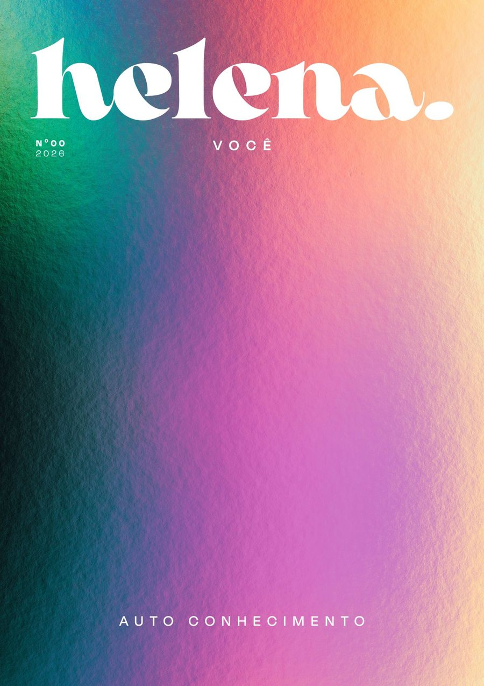
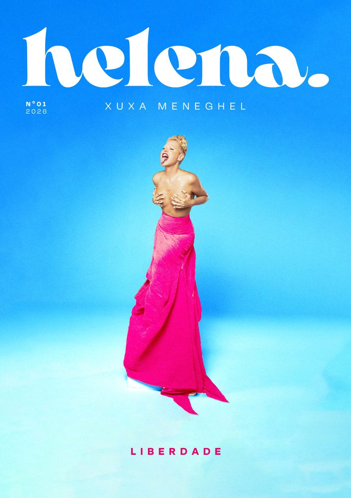
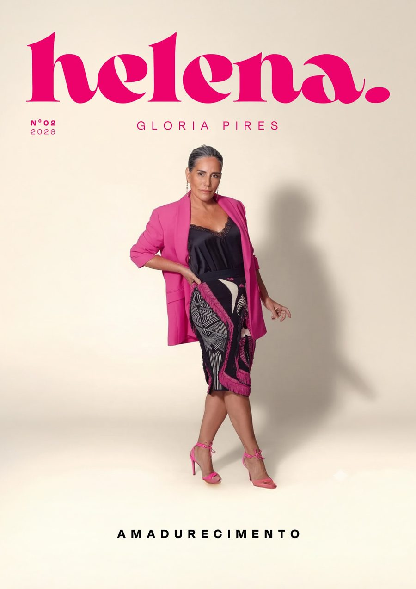
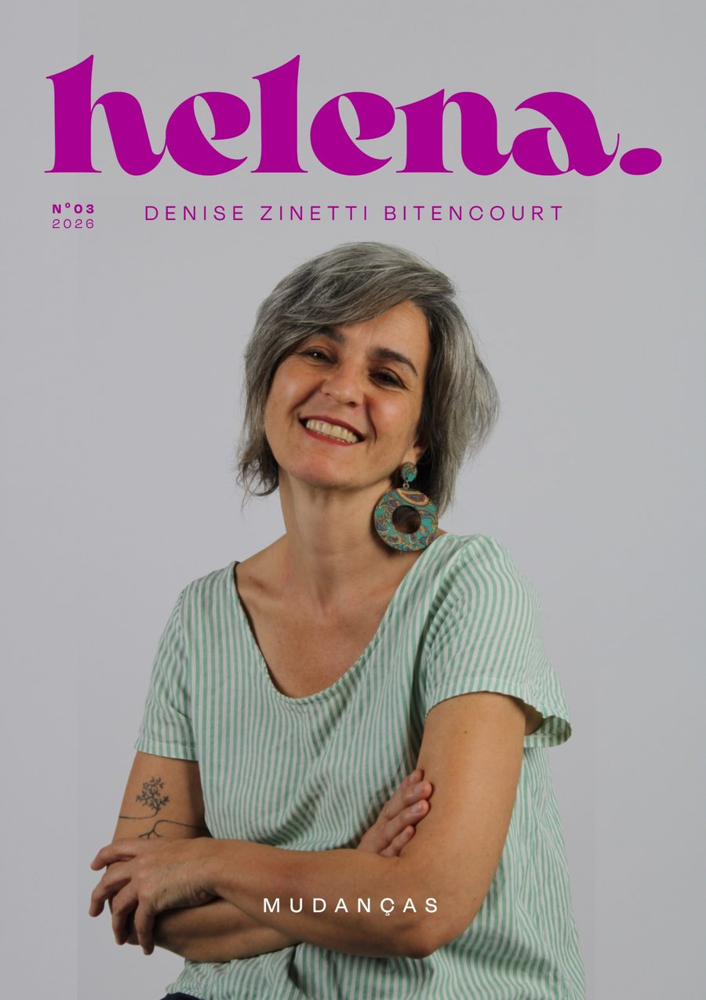
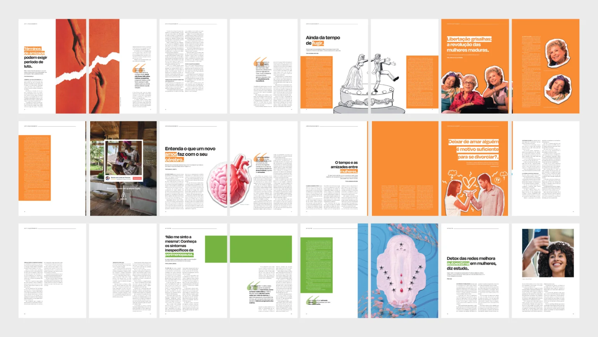
Concept
More than relationships: autonomy, independence and emotional well-being.
Mais do que relacionamentos: autonomia, independência e bem-estar emocional.
The challenge was to build a visual and verbal identity capable of creating genuine connections with Generation X women, translating their experiences, perspectives and needs into authentic, contemporary communication. With a close, intimate and sensitive tone, the magazine balances emotion, inspiration and information, and proposes a new way of reading and relating to editorial content.
O desafio foi construir uma identidade visual e verbal capaz de criar conexões genuínas com mulheres da geração X, traduzindo suas vivências, perspectivas e necessidades em uma comunicação autêntica e contemporânea. Com um tom próximo, intimista e sensível, a revista equilibra emoção, inspiração e informação, e propõe uma nova maneira de ler e se relacionar com o conteúdo editorial.
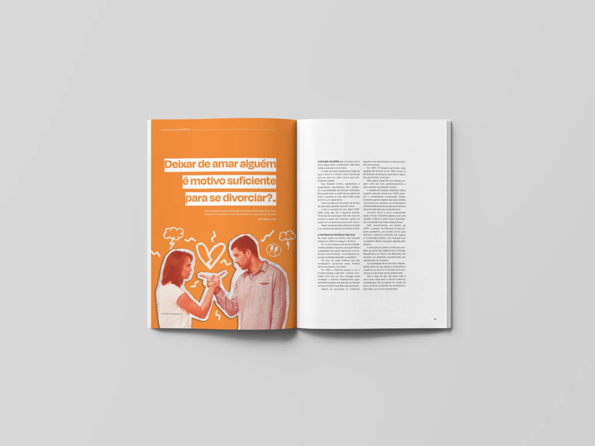
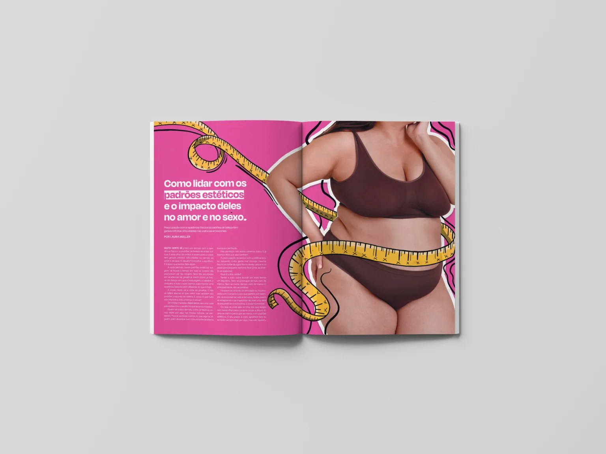
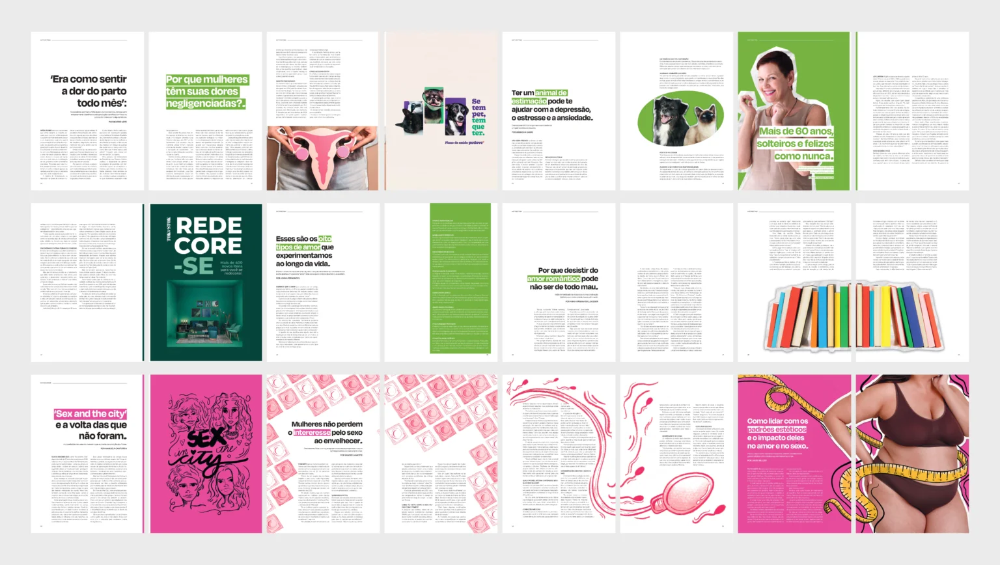
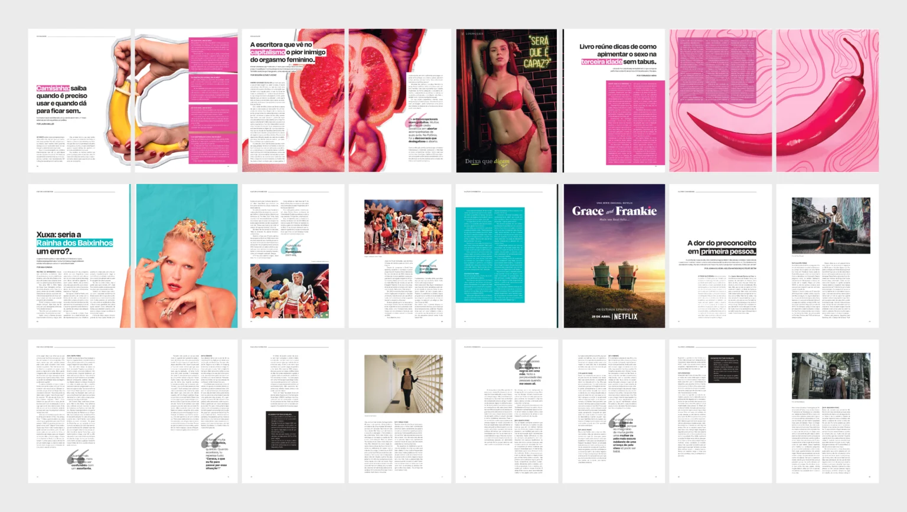
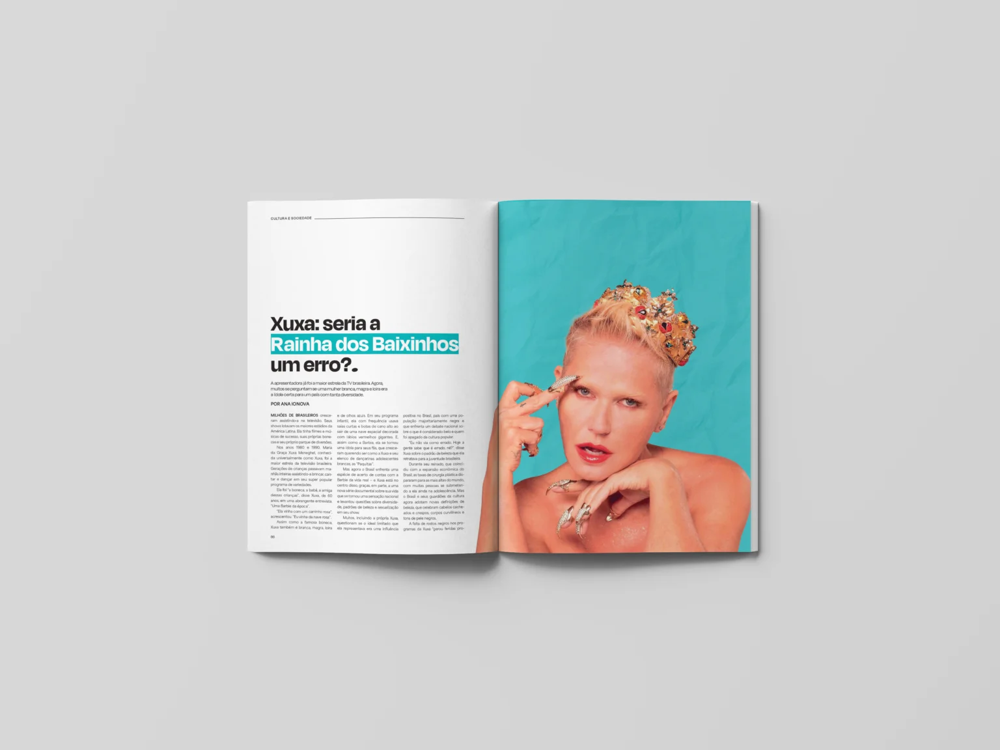
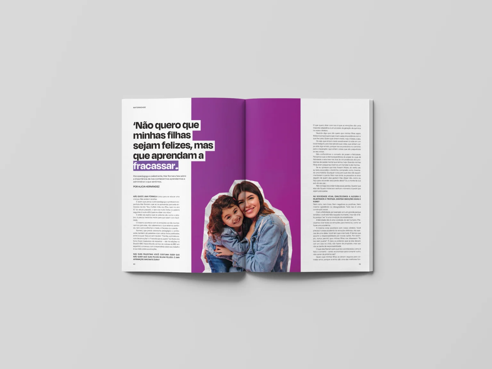
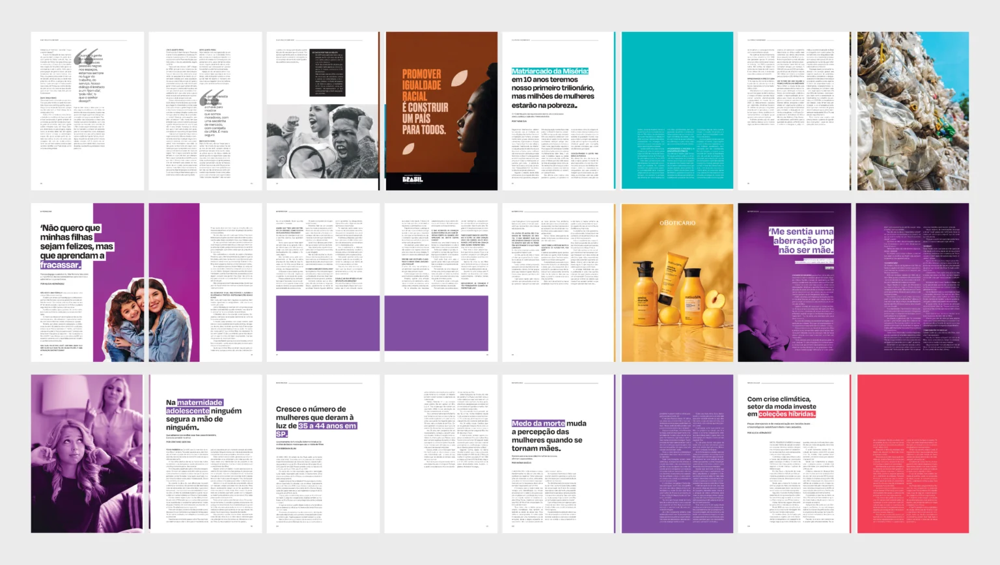
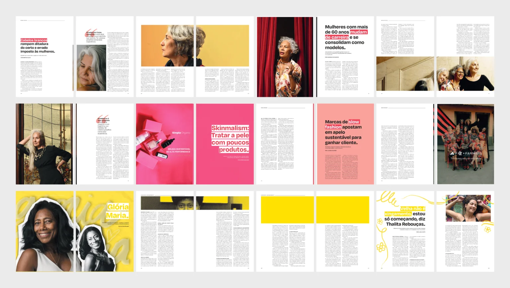
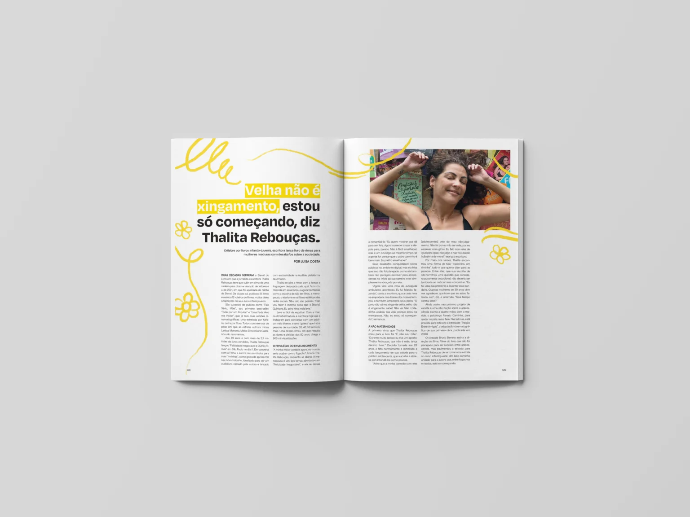
Credits
- Client
- Helena. Magazine
- Art Direction / Visual Identity / Layout / Content Curation / Illustration
- Victor Hugo Fávaro
- Illustration / Branding
- Eva Meira
- Layout / Content / Branding
- Giovanna Bellucci
- Content / Social Media / Branding
- Izabela Felix
Next projectBook Design
O Mágico de Oz→